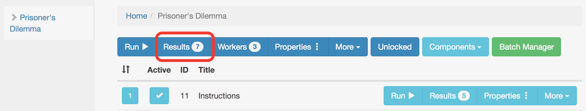

Results View
Once you collected data for a study, you can see and manage the results by clicking on the study Results button. The component Results view is similar, so we describe the study Results view only.

The image below is an example of the results for the Prisonner’s Dilemma example study. There’s quite a lot of information here, so we’ll go through each piece.

Interacting With The Results Table
JATOS displays results in the form of interactive tables. Here’s what you can do in them:
Selecting Results
You’ll notice that the first two results are selected (in dark blue) in the example. You can select/deselect specific results by clicking anywhere on the row. You can also use the buttons on the bar above to select all results in the table.
Filter Results
The filter lets you search all text in the whole results table (excluding the actual result data).
If you type, for example, “Personal Single” in the Filter Results field, only the results ran by a Personal Single worker will appear on the table. You can then click on Select Filtered to select and then export only those results that you’re interested in. All fields in the table are searchable and you can combine fields (e.g. by filtering for “Personal Single Finished”).
View Component Results
Each study result has a little arrow on the left. If you click on it, the individual component results for the study will be displayed like in the bottom-most result of the screenshot above.
Export
Once you selected the results you’re interested in, click Export and your browser will download a text file that contains your results in whatever format (text, csv, json) you stored them. Then read this text file with SPSS, Excel, Matlab, R or whatever program you use to analyze results.
Delete
You can click Delete to remove all or only some selected results. Keep in mind there’s no undo function for this.
Table Columns
You can show and hide the columns displayed in the table with the drop-down menu under the Display Columns button.
Result ID
An identifier assigned by JATOS to each study result. A study result is actually a set of component results, each of them with their own (different) Component ID.
Start Time
Time (set at the server’s time zone) at which the first component of the study was started.
Last Seen
JATOS records by default a “heartbeat” from each RUNNING component. Last Seen is the time of the last heartbeat received. The heartbeat is sent as long as the component runs in the worker’s browser and stops either when the study is finished or when the browser tab is closed. The default period of the heartbeat is 2 minutes but you can change it through a jatos.js function.
Duration
Simply the time difference between the start of the first study component and the end of last component. It will display ‘not yet’ for studies that are not yet finished.
Worker ID
Assigned by JATOS. Each worker has its own Worker ID. JATOS’ admin user will always have Worker ID 1. You can click on a Worker ID to see all the worker’s results.
Worker Type
Displays the Worker type that ran the study.
MTurk Worker ID
Only applies to studies run by MTurk workers. An identifier given by Amazon Mechanical Turk’s, not by JATOS.
Group ID
Only available for group studies. It identifies the group.
State
Possible states for study results are:
- PRE - Preview of study (exists only in PersonalSingleWorker and GeneralSingleWorker)
- STARTED - Study was started
- DATA_RETRIEVED - Study’s jsonData were retrieved
- FINISHED - Study successfully finished
- ABORTED - Study aborted by worker
- FAIL - Something went wrong
Possible states for component results are:
- STARTED - Component was started
- DATA_RETRIEVED - Component’s jsonData were retrieved
- RESULTDATA_POSTED - Result data were posted
- FINISHED - Component was finished
- RELOADED - Component was reloaded
- ABORTED - Component aborted by worker
- FAIL - Something went wrong
Messages
Either an error message if the study failed (can be set by jatos.endStudy) or a message if the study was aborted (can be set via jatos.abortStudy).